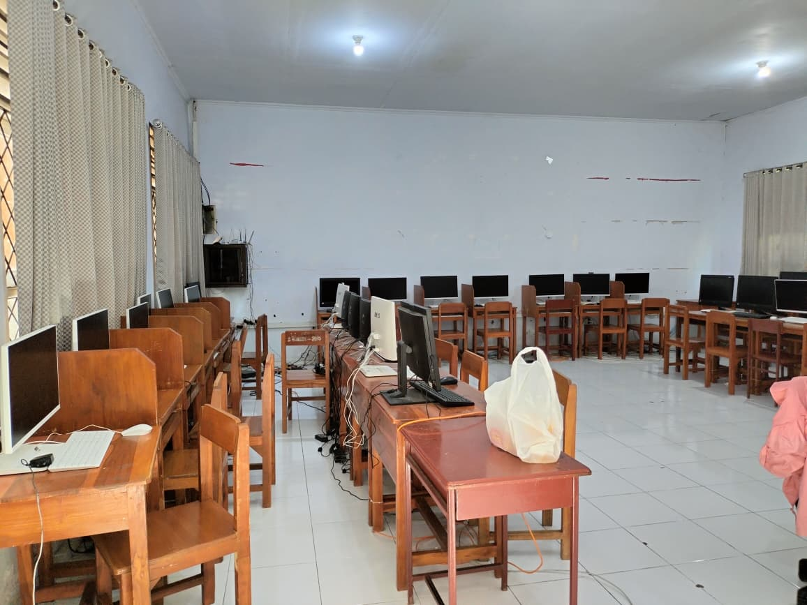
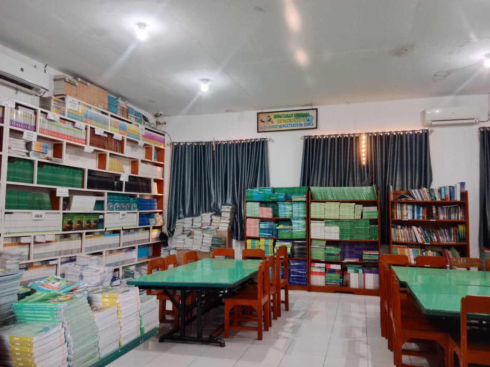
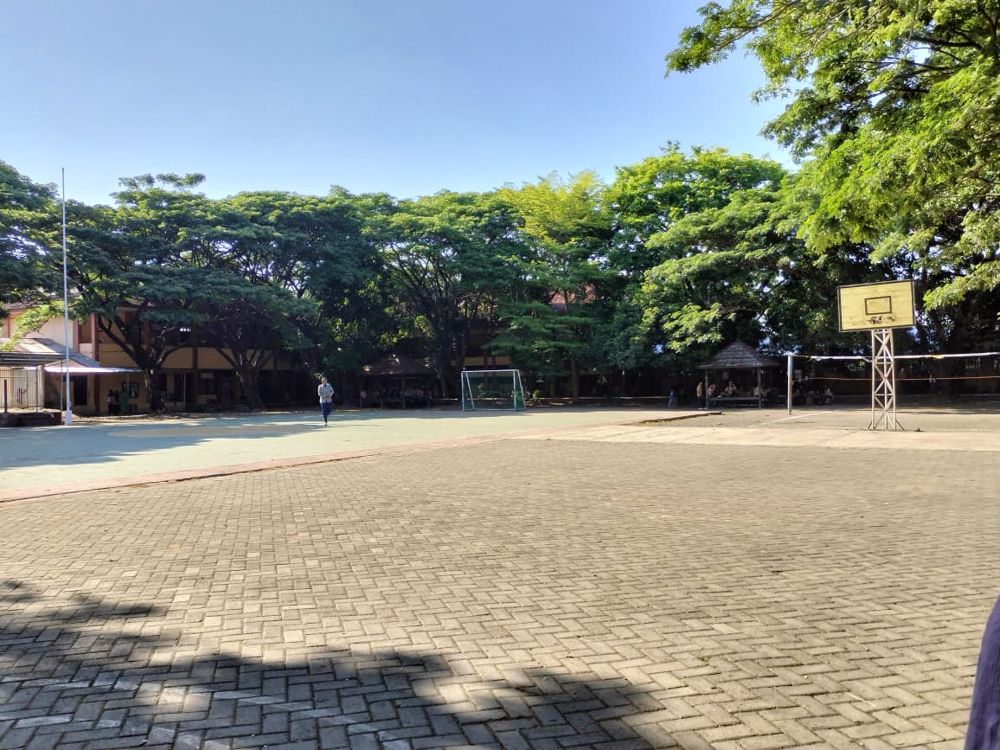
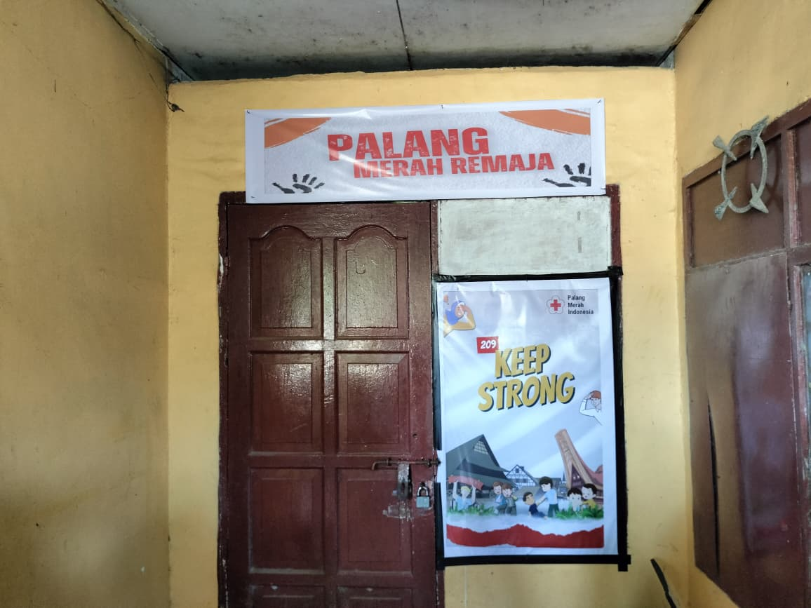
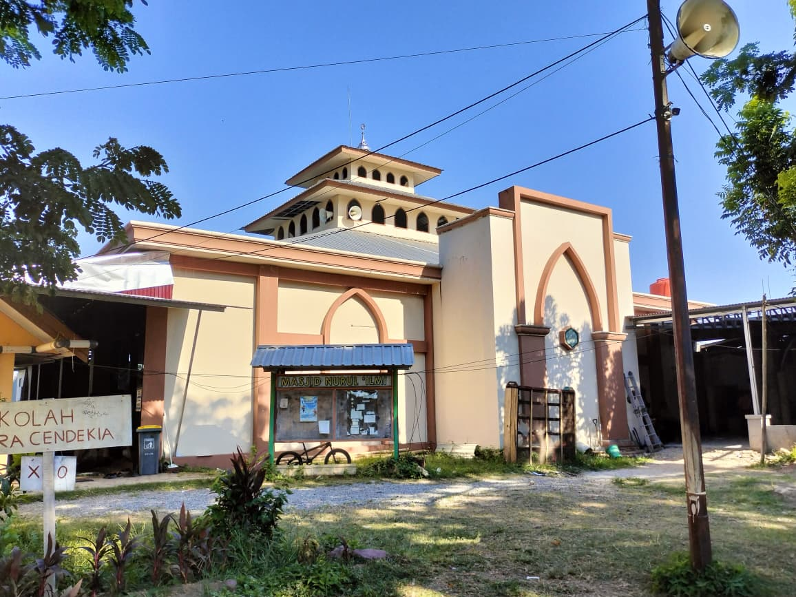

Fasilitas Sekolah
SMA Negeri 9 Makassar memiliki berbagai fasilitas penunjang kegiatan belajar mengajar dan pengembangan diri siswa.
| No. | Nama Fasilitas | Keterangan | Jumlah | images |
|---|---|---|---|---|
| 1 | Laboratorium Kimia | Ruang praktik Kimia lengkap dengan alat eksperimen. | 1 |

|
| 2 | Laboratorium Komputer | Untuk praktik pemrograman dan multimedia. | 1 |
 |
| 3 | Perpustakaan | Koleksi buku pelajaran dan ruang baca nyaman. | 1 |
 |
| 4 | Lapangan Olahraga | Serbaguna untuk basket, futsal, dan upacara. | 1 |
 |
| 5 | UKS | Layanan kesehatan dasar dan pertolongan pertama. | 1 |
 |
| 6 | Kantin | Menyediakan makanan sehat dan bergizi untuk siswa dan guru. | 1 |

|
| 7 | Masjid | Tempat ibadah bagi siswa, guru, dan staf sekolah. | 1 |
 |
Denah Sekolah
Berikut adalah denah SMA Negeri 9 Makassar untuk tahun ajaran 2024-2025: